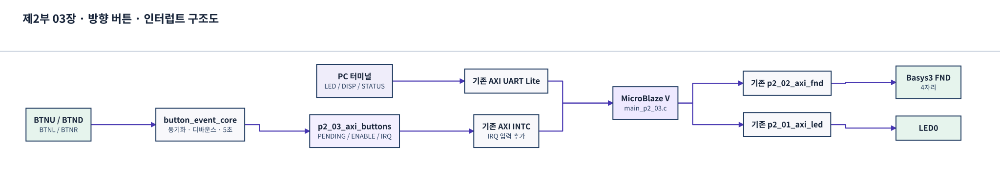
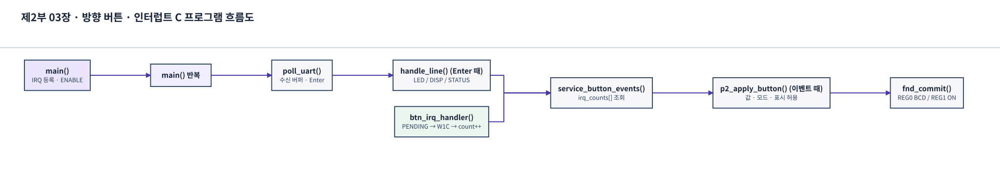

00이 장의 목표
Basys3 방향 버튼 4개의 눌림 시간을 RTL에서 구분하고, MicroBlaze V가 AXI IRQ를 받아 기존 4자리 FND를 제어합니다.
- BTNU/D/L/R
- 5초 Long Press
- AXI4-Lite + IRQ
- FND 4자리
- Vivado / Vitis 2024.2
01완성 후 동작
네 방향 버튼에서 짧게 누르기와 5초 이상 길게 누르기를 구분하고, 이벤트를 AXI(에이엑스아이, 고급 확장 인터페이스) 레지스터에 기록합니다. CPU(중앙처리장치)는 인터럽트를 받아 FND(에프엔디, 4자리 숫자 표시기)의 표시값·표시 모드를 갱신합니다.
| 버튼 | 짧게 누르기 (5초 미만) | 길게 누르기 (5초 이상) | FND 동작 |
|---|---|---|---|
| BTNU | VALUE +1 | VALUE +100 | 0000~9999 범위에서 순환 |
| BTND | VALUE −1 | VALUE −100 | 0000 → 9999 역순환 |
| BTNL | VALUE ↔ EVENTS 화면 전환 | VALUE 숫자 0000으로 초기화 | EVENTS는 처리된 버튼 이벤트 총수 |
| BTNR | FND 표시 ON/OFF 전환 | VALUE·EVENTS 초기화 + 표시 ON | 초기화 후 VALUE 0000 표시 |
STATUS로 확인합니다. 초기 상태는 이전 02장과 동일하게 FND OFF·VALUE 0000입니다.| 기존 UART 명령 | 동작 |
|---|---|
LED ON / LED OFF | 01장 LED0 제어 유지 |
DISP 1234 / DISP 0050 | 02장 숫자 표시, VALUE 모드로 복귀 |
DISP OFF | FND 소등, 숫자 유지 |
STATUS | LED·FND·버튼 상태 및 이벤트 중복 표시 |
02CPU·RTL·AXI·INTC의 역할

버튼 입력의 시간 판정은 button_event_core에서 처리합니다. p2_03_axi_buttons_v1_0는 레지스터·인터럽트만 담당합니다. C 프로그램은 이벤트에 따라 값을 갱신하고, 기존 FND IP에 BCD(비씨디, 십진 숫자를 4비트씩 나타내는 방식)를 기록합니다.
INTC(인터럽트 컨트롤러, 여러 장치의 요청을 CPU로 전달)는 기존 Timer 경로를 유지하면서 새 버튼 IRQ 입력을 추가합니다. BTNC(U18)는 시스템 Reset 전용입니다.
03동기화·디바운스·5초 구분
| 과정 | 기능 | 해석·확인 |
|---|---|---|
| ① 2FF 동기화 | meta, synced | 비동기 버튼을 AXI 클록 도메인으로 전달. 메타안정성 위험 감소(완전 제거 아님) |
| ② 디바운스 | db_ticks | 연속적으로 다른 수준이 20ms 유지되어야 debounced 갱신 |
| ③ 길게 누르기 | hold_ticks, long_sent | 안정적으로 눌림이 확정된 후 5초에 LONG 1회 |
| ④ 짧게 누르기 | event_pulse[k] | LONG이 없었던 누름을 놓고, 해제가 디바운스된 시점에 SHORT 1회 |
| ⑤ 독립 동시 입력 | g_button[0..3] | 4개 버튼 각각 타이머 별도, 동시 눌림 허용 |
S00_AXI_ACLK이 100MHz가 아니면 분주값을 수정해야 합니다. LONG_CYCLES는 디바운스 후 시간이며, 외부 손가락 누름의 정확한 시간과는 디바운스 지연만큼 다릅니다.100 MHz × 0.020 s → DEBOUNCE_CYCLES 2,000,000
100 MHz × 5.000 s → LONG_CYCLES 500,000,000
테스트벤치 전용: DEBOUNCE_CYCLES 3 / LONG_CYCLES 1204AXI4-Lite 레지스터·IRQ
| Offset | 이름 | 접근·비트 | Reset | 실제 동작 |
|---|---|---|---|---|
0x00 | BTN_PENDING | [7:0] R / W1C | 0 | 이벤트 발생 시 1, 그 비트에 1을 쓰면 해제 |
0x04 | BTN_ENABLE | [7:0] RW | 0 | 인터럽트 허용 마스크. irq = |(pending & enable) |
0x08 | BTN_PRESSED | [3:0] RO | 0 | 현재 디바운스된 버튼 상태 |
0x0C | BTN_ID | RO, 0x00030001 | 고정 | 잘못된 주소/IP 접근 여부 확인 |
0x10 | BTN_COALESCED | [7:0] R / W1C | 0 | 같은 종류 이벤트가 PENDING=1 동안 다시 왔음을 기록 |
| 이벤트 비트 | 0 | 1 | 2 | 3 | 4 | 5 | 6 | 7 |
|---|---|---|---|---|---|---|---|---|
| 종류 | U 짧게 | D 짧게 | L 짧게 | R 짧게 | U 길게 | D 길게 | L 길게 | R 길게 |
Xil_Out32(BTN_BASE + 0x00, 0x01)은 U 짧게 이벤트만 해제하며, 나머지 비트는 보존합니다. 지우기와 신규 이벤트가 같은 클록에 발생하면 신규 이벤트의 SET이 우선합니다.PENDING은 이벤트별 1비트이므로 동일 종류의 두 입력을 큐처럼 보관하지 못합니다. 그런 상황에서는 COALESCED를 1로 남기지만 정확한 발생 횟수는 복구할 수 없습니다. 제3장에서는 이 한계를 실습으로 확인하고, 이벤트 FIFO/카운터는 후속 고도화 과제로 분리합니다.05방향 버튼 핀과 FND 보존
| 포트 | Basys3 핀 | 기능 |
|---|---|---|
btnU | T18 | UP |
btnD | U17 | DOWN |
btnL | W19 | LEFT |
btnR | T17 | RIGHT |
btnC | U18 | 기존 Reset, 변경 금지 |
핀은 Digilent Basys3 Master XDC 기준입니다. LVCMOS33 입출력 표준을 사용하고, 기존 FND 세그먼트 및 LED0 핀 제약을 중복 추가하지 않습니다.
06기존 성과 보존·변경 파일
| 기존 유지 | 제3장 추가·변경 |
|---|---|
기본 SoC soc11_user_top 성공 기존 | 제3장 독립 프로젝트 soc_ip_design_03 |
01장 soc_ip_design_01 및 LED IP | 버튼 IP p2_03_axi_buttons_v1_0 |
02장 soc_ip_design_02 및 FND IP | 버튼 Core + AXI Slave + AXI INTC 입력 |
| 기존 UART Lite / Clock / Reset / BRAM | 신규 Vitis C·BSP·XSA, 버튼 4개 XDC |
0701. 02장 기준 프로젝트를 독립 복제
목적
성공한 02장 프로젝트과 기본 SoC 기존을 보존하고 제3장만 확장합니다.
메뉴·위치
Vivado → File → Open Project → File → Project → Save As...
작업 절차
soc_ip_design_02.xpr를 열고 $HOME/soc/hw/soc_ip_design_03/soc_ip_design_03.xpr로 Save As합니다. 프로젝트 관리 폴더 안에 soc11_integration.bd, basys3_soc11_top.v가 신규 경로로 복사되었는지 확인합니다.
정상 확인
02장 프로젝트 XPR 파일은 그대로 남고 새 프로젝트에서 기존 LED/FND 연결이 확인됩니다.
동작 원리
이 장에서는 기존 Block Design을 재구성하지 않고 사용자 IP 하나를 추가합니다.
오류 확인
새 XPR이 이전 프로젝트의 BD/IP 파일을 절대 경로로 참조하면 해당 참조를 먼저 신규 프로젝트로 분리합니다.
08Clock·Reset·INTC 경로 확인
목적
신규 버튼 IP가 기존 시스템 타이밍과 일치하도록 준비합니다.
메뉴·위치
Open Block Design → soc11_integration.bd
작업 절차
기존 axi_intc와 axi_timer 연결을 확인합니다. S00_AXI_ACLK에 공급할 실제 주파수를 BD와 Clocking Wizard에서 확인합니다. BTNC Reset의 기존 연결을 기록합니다.
정상 확인
Timer → INTC → MicroBlaze V 인터럽트 경로와 BTNC Reset이 기존과 동일합니다.
동작 원리
버튼 IP는 기존 AXI Clock을 사용하며 별도 클록을 만들지 않습니다.
오류 확인
기존 INTC의 입력이 1개인 경우 나중에 xlconcat 또는 입력 폭 변경이 필요합니다. Timer 입력을 삭제하지 않습니다.
09버튼 RTL Core 이해·독립 소스 준비
목적
버튼 4개를 서로 독립적인 디바운스·길게 누르기 판정으로 처리합니다.
메뉴·위치
압축 해제 자료 → rtl/button_event_core.v
작업 절차
모듈 button_event_core의 btn_raw[3:0], event_pulse[7:0], pressed[3:0] 포트를 확인합니다. 테스트용 짧은 카운트와 실제 20ms/5s 카운트를 구분합니다.
정상 확인
UP, DOWN, LEFT, RIGHT 각각 별도의 db_ticks, hold_ticks, long_sent가 존재합니다.
동작 원리
동시 버튼 입력, 접점 바운스, 긴 누름 중복 발행을 RTL 내부에서 막습니다.
오류 확인
2FF 동기화에 사용하는 ASYNC_REG 특성과 클록 주파수 설정을 확인합니다.
10AXI 버튼 IP 생성
목적
CPU가 버튼 이벤트를 읽고 지울 수 있도록 별도 AXI4-Lite IP를 만듭니다.
메뉴·위치
Tools → Create and Package New IP → Create a new AXI4 peripheral
작업 절차
IP 이름 p2_03_axi_buttons, 버전 1.0, 저장 장소 신규 프로젝트 ip_repo. 버스 S00_AXI, AXI4-Lite, Data Width 32. 마법사의 레지스터 개수는 기본 스켈레톤용으로 사용하고 최종 설계는 0x00~0x10의 5개 레지스터 계약을 따릅니다.
정상 확인
IP 편집 프로젝트와 p2_03_axi_buttons_v1_0.v/..._S00_AXI.v 파일이 생성됩니다.
동작 원리
AXI4-Lite는 값·상태를 저장하는 버스이며, 버튼 시간 판정은 별도 RTL Core가 수행합니다.
오류 확인
Vivado가 생성하는 템플릿과 자료의 모듈·포트명을 비교합니다. 생성된 파일을 무조건 덮어쓰지 않습니다.
11IP Top·AXI Slave 소스 반영
목적
이벤트 비트맵, 인터럽트 마스크, W1C, 중복 기록을 구현합니다.
메뉴·위치
Edit IP → Sources → ...v, ..._S00_AXI.v
작업 절차
신규 IP 편집 프로젝트에서 생성된 템플릿의 백업을 보존하고 rtl/p2_03_axi_buttons_v1_0.v 및 rtl/p2_03_axi_buttons_v1_0_S00_AXI.v 내용을 대조합니다. button_event_core.v를 IP 소스에 추가합니다.
정상 확인
irq는 레벨 신호이고, BTN PENDING/ENABLE/PRESSED/ID/COALESCED 5개 레지스터가 존재합니다.
동작 원리
AW(주소)와 W(데이터)가 다른 클록에 전달되어도 동작하도록 각각 저장하고 B(쓰기 응답)를 반환합니다.
오류 확인
현재 IP는 32비트 AXI4-Lite 구성에 한정합니다. 외부 포트/Parameter/Master-XDC 메타데이터가 일치하지 않으면 다시 Packaging합니다.
12독립 RTL·AXI 테스트벤치 실행
목적
보드 연결 전 버튼 시간 판정·AXI 핸드셰이크를 확인합니다.
메뉴·위치
Simulation Sources → Add Sources 또는 Ubuntu 터미널
작업 절차
테스트벤치 tests/tb_button_event_core.v와 tests/tb_p2_03_axi_buttons.v를 각각 실행합니다. Ubuntu에서 Icarus Verilog 설치 시 bash tests/run_rtl_tests.sh를 실행합니다.
정상 확인
바운스 제거, SHORT/LONG 단일 발행, 동시 버튼, IRQ 마스크/W1C/버스 읽기가 시나리오별로 자동 판정됩니다.
동작 원리
테스트는 실제 5초를 기다리지 않도록 DEBOUNCE=3, LONG=12 클록으로 축소합니다. 이 값은 보드용 값이 아닙니다.
오류 확인
테스트를 실행하고 단언과 파형을 확인한 뒤 합성을 진행합니다.
13IP Package와 포트 메타데이터 확인
목적
새 버튼 신호와 IRQ가 Block Design에서 사용 가능하도록 만듭니다.
메뉴·위치
Package IP → Ports and Interfaces → Review and Package → Re-Package IP
작업 절차
btnU, btnD, btnL, btnR (inputs) 및 irq (output)의 이름·방향을 확인합니다. S00_AXI는 AXI4-Lite Slave 버스로 유지합니다.
정상 확인
Re-Package 후 IP Catalog에서 버튼 IP를 찾아 추가할 수 있습니다.
동작 원리
CPU와 연결되는 AXI 레지스터 인터페이스와 보드 버튼 핀은 서로 다른 인터페이스입니다.
오류 확인
irq를 단순 GPIO가 아닌 인터럽트 핀으로 매핑하는 설정과 Clock/Reset 연관성을 확인합니다.
14Block Design에 AXI 버튼 IP 연결
목적
기존 CPU가 신규 레지스터를 접근하게 합니다.
메뉴·위치
Open Block Design → Add IP → p2_03_axi_buttons
작업 절차
IP를 추가하고 Run Connection Automation에서 S00_AXI를 기존 MicroBlaze V AXI 인터커넥트 경로에 연결합니다. s00_axi_aclk와 s00_axi_aresetn를 기존 AXI 클록/리셋에 연결합니다.
정상 확인
BD에는 LED·FND·버튼 사용자 IP 3개가 있고 신규 AXI 레지스터가 Address Editor에 표시됩니다.
동작 원리
버튼 IP는 별도 보드/클록이 아니라 기존 SoC의 단일 주변장치입니다.
오류 확인
AXI 연결 자동화 후 Address Editor의 중복 주소·reset polarity·클록 mismatch를 확인합니다.
15기존 AXI INTC에 버튼 IRQ 추가
목적
기존 Timer 인터럽트를 유지하면서 버튼 이벤트를 CPU에 전달합니다.
메뉴·위치
Block Design → axi_intc / xlconcat
작업 절차
기존 Timer의 interrupt 연결을 먼저 기록합니다. p2_03_axi_buttons/irq를 기존 INTC의 빈 입력으로 연결합니다. 여러 입력이 한 벡터로 모이면 xlconcat를 사용합니다. 입력 비트 위치를 기록합니다.
정상 확인
Timer와 버튼의 두 소스가 INTC에 들어가고 CPU 쪽 기존 인터럽트 출력은 유지됩니다.
동작 원리
IRQ는 펄스가 아닌 레벨이므로 CPU가 PENDING에 W1C를 수행할 때까지 유지됩니다.
오류 확인
CPU 쪽 인터럽트가 중복되거나 Timer 경로가 사라졌다면 중단하고 재연결합니다. IRQ ID는 입력 순서와 BSP 생성 결과에 의존합니다.
16버튼 포트 외부화와 Wrapper 재생성
목적
실제 Basys3 버튼을 신규 IP로 연결합니다.
메뉴·위치
BD 핀 우클릭 → Make External → Rename → Validate Design
작업 절차
네 입력을 btnU, btnD, btnL, btnR로 외부화합니다. Generate Output Products와 Vivado 관리 Create HDL Wrapper 실행 후 새 Wrapper의 실제 포트를 확인합니다.
정상 확인
실제 생성 soc11_integration_wrapper.v에 네 버튼 포트와 기존 FND·LED 포트가 모두 존재합니다.
동작 원리
사용자 Top의 포트 연결은 BD에서 외부화한 이름과 정확히 일치해야 합니다.
오류 확인
버튼 포트가 btnU_0처럼 자동 생성되었다면 BD에서 변경한 뒤 Wrapper를 재생성합니다.
17사용자 Top에 버튼 포트 추가
목적
Top에는 기능 로직을 넣지 않고 배선만 추가합니다.
메뉴·위치
Design Sources → basys3_soc11_top.v
작업 절차
rtl/basys3_soc11_top_p2_03.v의 추가 버튼 4개 및 Wrapper 인스턴스 연결을 신규 프로젝트 Top에 반영합니다. Set as Top 후 Elaborated Design을 엽니다.
정상 확인
Top에서 btnU/D/L/R가 BD 입력에 직접 연결되며 LED/FND/Reset/UART도 그대로 유지됩니다.
동작 원리
디바운스나 LED 표시 우선순위 등의 기능 로직은 Top이 아니라 Core/C에 위치합니다.
오류 확인
Top의 출력이 2개 드라이버에 의해 구동되면 01장 LED 단일 소유권 정책부터 확인합니다.
18핀 제약·Address Editor·합성·XSA
목적
보드 핀과 소프트웨어 주소가 물리적으로 확정되도록 합니다.
메뉴·위치
Constraints → *.xdc / Address Editor / Run Synthesis
작업 절차
제공 basys3_buttons_only.xdc 4개 버튼 핀만 신규 XDC에 추가합니다. Address Editor에서 버튼 IP 주소·Range 기록, S00_AXI_ACLK 주파수 확인 후 Validate Design → Synthesis → Implementation → Timing → Bitstream → Export Hardware 순서로 작업합니다.
정상 확인
4개 입력 핀이 각각 한 번만 할당되고, 새 XSA에 버튼 IP와 인터럽트 연결이 포함됩니다.
동작 원리
BTN C Reset은 그대로 유지되고 기존 타이머 IP/LED/FND IP 주소도 충돌하지 않아야 합니다.
오류 확인
WNS/TNS·Critical Warning·DRC를 검토합니다. 실제 주파수에 맞지 않는 20ms/5초 카운트가 있으면 재생성합니다.
19Vitis BSP의 주소·인터럽트 ID 대조
목적
가짜 주소나 추정한 IRQ 번호로 빌드하지 않도록 준비합니다.
메뉴·위치
Vitis Unified IDE → Create/Update Platform → Generated BSP
작업 절차
03장 새 XSA로 Platform을 생성·빌드합니다. xparameters.h, SDT 생성 파일, AXI INTC 입력 번호를 확인하고 P2_01_LED_BASEADDR, P2_02_FND_BASEADDR, P2_03_BTN_BASEADDR, P2_03_BTN_INTR_ID, P2_03_BTN_INTR_PARENT를 실측 구성 값으로 설정합니다.
정상 확인
세 IP 주소는 서로 다르고, 버튼 IRQ 번호 및 상위 인터럽트 컨트롤러 정보가 확인됩니다.
동작 원리
BSP는 Vivado XSA의 주소·인터럽트 연결을 C 프로그램용 매크로로 변환합니다.
오류 확인
#error가 나오는 것은 잘못된 주소 추정을 막는 의도적 안전 장치입니다. SDT와 Classic 인터럽트 경로를 혼용하지 않습니다.
20C Application에 03장 전체 코드 적용
목적
기존 UART 문자열 명령과 버튼 ISR을 하나의 프로그램에서 구동합니다.
메뉴·위치
Vitis Application Component → Sources
작업 절차
sw/main_p2_03.c, sw/p2_03_logic.c, sw/p2_03_logic.h 세 파일을 추가합니다. 같은 헤더가 중복 포함되지 않게 하고, 실제 BSP 값을 입력한 뒤 ELF를 Build합니다.
정상 확인
기존 DISP/LED/STATUS 문자열이 유지되고 setup_button_interrupt()가 정상 실행됩니다.
동작 원리
ISR에서는 PENDING 읽기·W1C·계수 증가만 하며, FND 갱신과 UART 송신은 Main에서 수행합니다.
오류 확인
이전 02장 read_command_line()은 블로킹 방식이지만, 이번 장은 poll_uart() 비차단 방식으로 변경해 버튼 처리를 막지 않습니다.
21C·RTL 흐름과 인터럽트 확인
목적
소스와 블록도가 같은 함수·데이터 흐름을 설명하는지 확인합니다.
메뉴·위치
P2_03_C_Explained.html 및 assets/command_flow.svg
작업 절차
btn_irq_handler() → irq_counts[] → service_button_events() → p2_apply_button() → fnd_commit()를 따라 실제 비트 0/4/7의 값을 계산합니다.
정상 확인
UP 짧게와 길게가 각각 다른 비트로 처리되고 W1C가 IRQ를 해제합니다.
동작 원리
중복 이벤트 비트가 생긴 경우 COALESCED가 기록되며 발생 횟수 보존과는 다릅니다.
오류 확인
그림 명칭은 실제 소스와 일치합니다. IRQ 레벨이 계속 켜지면 PENDING ACK를 확인합니다.

22실물 입력 시험 시나리오
목적
버튼 4개·UART·FND·IRQ를 한 번에 시험합니다.
메뉴·위치
Basys3 / PC 터미널 115200 8N1
작업 절차
DISP 0050을 입력하고 UP·DOWN을 짧게 누릅니다. UP 5초 이상, DOWN 5초 이상을 시험합니다. LEFT를 짧게 눌러 EVENTS를 선택하고, RIGHT로 OFF/ON을 전환한 뒤 RIGHT 5초 이상으로 초기화합니다.
정상 확인
FND는 0050→0051→0050→0150→0050 등으로 변하고, STATUS의 MODE/PENDING/COALESCED를 볼 수 있습니다.
동작 원리
CPU ISR 이후 설정값이 02장 FND IP의 REG0/REG1로 전달되어 표시됩니다.
오류 확인
01·02장 LED와 FND 기능을 먼저 확인합니다.
| 입력 조건 | 기대 결과 |
|---|---|
DISP 0050 | VALUE 0050, 표시 ON |
| UP 짧게 | 0051 |
| DOWN 짧게 | 0050 |
| UP 길게 | 0150, SHORT 추가 없음 |
| DOWN 길게 | 0050 |
| LEFT 짧게 | MODE EVENTS, 처리 이벤트 횟수 표시 |
| RIGHT 짧게 | FND OFF, 숫자 내부 보존 |
| RIGHT 길게 | VALUE 0000, EVENTS 0000, ON |
| 버튼 동시 누름 | 독립 이벤트 비트 둘 이상 기록 |
| BTNC | 기존 시스템 Reset, 일반 버튼 이벤트 미발생 |
23증상별 첫 번째 확인 위치
| 증상 | 가능 원인 | 먼저 확인할 파일·위치 |
|---|---|---|
| 버튼 변화 없음 | 새 버튼 IP·XDC 누락, Reset 미해제 | btnU/D/L/R, BTN_PRESSED |
| BUTTON IRQ 계속 HIGH | PENDING W1C 미처리 / INTC 모드 오류 | btn_irq_handler(), 0x00 레지스터 |
| 5초가 너무 짧거나 김 | AXI 실제 클록과 LONG_CYCLES 불일치 | BD S00_AXI_ACLK와 IP 파라미터 |
| 누를 때 두 번 증가 | 디바운스가 너무 짧음, SHORT/LONG 중복 | button_event_core.v, TB 파형 |
| 빠르게 두 번 눌러 한 번만 반영 | PENDING 동일 비트 중복·서비스 지연 | BTN_COALESCED 상태 |
| Timer 동작 중단 | INTC 입력 확장 시 기존 선 제거 | 기존 Timer→INTC 라인 |
Vitis #error | Address/IRQ Parent 미입력 | 생성 xparameters.h 및 SDT |
| UART 명령 중 버튼 누락 | UART 처리가 블로킹/버튼 IRQ 미처리 | poll_uart(), INTC 설정 |
| FND 값 0050이 50으로 보임 | BCD 또는 AN 매핑 오류 | 02장 fnd_scan_controller |
| Top 포트 인스턴스 오류 | Wrapper 아직 신규 포트 미생성 | soc11_integration_wrapper.v |
24코드·테스트·공식 근거
핀/버튼: Digilent Basys3 Master XDC. AXI IP: AMD UG1118. 인터럽트 함수: AMD XSetupInterruptSystem (API 버전 차이는 실제 2024.2 BSP 확인).
25실습 파일
# P2-03: append ONLY after checking existing master XDC for duplicate ports.
# Digilent Basys3 Master XDC, four directional pushbuttons (active high).
set_property PACKAGE_PIN T18 [get_ports btnU]
set_property IOSTANDARD LVCMOS33 [get_ports btnU]
set_property PACKAGE_PIN U17 [get_ports btnD]
set_property IOSTANDARD LVCMOS33 [get_ports btnD]
set_property PACKAGE_PIN W19 [get_ports btnL]
set_property IOSTANDARD LVCMOS33 [get_ports btnL]
set_property PACKAGE_PIN T17 [get_ports btnR]
set_property IOSTANDARD LVCMOS33 [get_ports btnR]
# BTNC U18 is ALREADY used as system reset. Do not duplicate it.
// P2-03: user board shell. Use only after BD regenerates wrapper ports.
// (유지) BTN C is system reset, not an event input.
// (유지) LED0 uses P2-01 IP; FND outputs use P2-02 IP.
// (추가) Four separate button ports; IRQ stays inside BD -> AXI INTC.
module basys3_soc11_top (
input wire clk, input wire btnC,
input wire btnU, input wire btnD, input wire btnL, input wire btnR,
input wire [15:0] sw,
output wire [15:0] led,
input wire RsRx, output wire RsTx,
output wire [6:0] seg, output wire [3:0] an, output wire dp
);
wire [15:0] gpio_led;
wire ip_led0;
assign led = {gpio_led[15:1], ip_led0}; // Shell-only bit connection.
soc11_integration_wrapper u_soc11 (
.clk(clk), .btnC(btnC),
.btnU(btnU), .btnD(btnD), .btnL(btnL), .btnR(btnR),
.sw_tri_i(sw), .led_tri_o(gpio_led),
.UART_0_rxd(RsRx), .UART_0_txd(RsTx),
.p2_led_o(ip_led0),
.fnd_seg(seg), .fnd_an(an), .fnd_dp(dp)
);
endmodule
`timescale 1ns/1ps
// P2-03: reusable four-button synchronizer, debounce, short/long event generator.
// btn_raw[0]=UP, [1]=DOWN, [2]=LEFT, [3]=RIGHT; active high.
// event_pulse[0..3]=short on debounced release;
// event_pulse[4..7]=long once at threshold, while held.
module button_event_core #(
parameter integer DEBOUNCE_CYCLES = 2000000, // 20 ms at 100 MHz
parameter integer LONG_CYCLES = 500000000 // 5 s at 100 MHz
)(
input wire clk,
input wire resetn,
input wire [3:0] btn_raw,
output reg [7:0] event_pulse,
output wire [3:0] pressed
);
// $clog2 helps keep a small counter for accelerated TB parameters.
localparam integer DB_W = (DEBOUNCE_CYCLES < 2) ? 1 : $clog2(DEBOUNCE_CYCLES+1);
localparam integer LONG_W = (LONG_CYCLES < 2) ? 1 : $clog2(LONG_CYCLES+1);
genvar k;
generate for (k=0; k<4; k=k+1) begin: g_button
(* ASYNC_REG = "TRUE" *) reg meta;
(* ASYNC_REG = "TRUE" *) reg synced;
reg debounced;
reg [DB_W-1:0] db_ticks;
reg [LONG_W-1:0] hold_ticks;
reg long_sent;
assign pressed[k] = debounced;
always @(posedge clk) begin
if (!resetn) begin
meta <= 1'b0;
synced <= 1'b0;
debounced <= 1'b0;
db_ticks <= {DB_W{1'b0}};
hold_ticks <= {LONG_W{1'b0}};
long_sent <= 1'b0;
event_pulse[k] <= 1'b0;
event_pulse[k+4] <= 1'b0;
end else begin
// Two-register synchronizer for asynchronous button input.
meta <= btn_raw[k];
synced <= meta;
event_pulse[k] <= 1'b0;
event_pulse[k+4] <= 1'b0;
// Count only when the sampled value disagrees with stable state.
if (synced == debounced) begin
db_ticks <= {DB_W{1'b0}};
end else if (db_ticks == DEBOUNCE_CYCLES-1) begin
db_ticks <= {DB_W{1'b0}};
debounced <= synced;
if (synced) begin
hold_ticks <= {LONG_W{1'b0}};
long_sent <= 1'b0;
end else begin
// No short pulse after a long event on the same press.
if (!long_sent) event_pulse[k] <= 1'b1;
hold_ticks <= {LONG_W{1'b0}};
long_sent <= 1'b0;
end
end else begin
db_ticks <= db_ticks + 1'b1;
end
// Freeze time while synchronized input is low; avoids a
// false 5-second event during release debounce.
if (debounced && synced && !long_sent) begin
if (hold_ticks == LONG_CYCLES-1) begin
event_pulse[k+4] <= 1'b1;
long_sent <= 1'b1;
end else begin
hold_ticks <= hold_ticks + 1'b1;
end
end
end
end
end endgenerate
endmodule
`timescale 1ns/1ps
// AXI IP top: button synchronizer/debounce/event + AXI register/IRQ.
// RTL test can shorten cycles; actual cycles must match S00_AXI clock.
module p2_03_axi_buttons_v1_0 #(
parameter integer DEBOUNCE_CYCLES = 2000000,
parameter integer LONG_CYCLES = 500000000,
parameter integer C_S00_AXI_DATA_WIDTH = 32,
parameter integer C_S00_AXI_ADDR_WIDTH = 6
)(
input wire btnU, input wire btnD, input wire btnL, input wire btnR,
output wire irq,
input wire s00_axi_aclk,
input wire s00_axi_aresetn,
input wire [C_S00_AXI_ADDR_WIDTH-1:0] s00_axi_awaddr,
input wire [2:0] s00_axi_awprot,
input wire s00_axi_awvalid,
output wire s00_axi_awready,
input wire [C_S00_AXI_DATA_WIDTH-1:0] s00_axi_wdata,
input wire [(C_S00_AXI_DATA_WIDTH/8)-1:0] s00_axi_wstrb,
input wire s00_axi_wvalid,
output wire s00_axi_wready,
output wire [1:0] s00_axi_bresp,
output wire s00_axi_bvalid,
input wire s00_axi_bready,
input wire [C_S00_AXI_ADDR_WIDTH-1:0] s00_axi_araddr,
input wire [2:0] s00_axi_arprot,
input wire s00_axi_arvalid,
output wire s00_axi_arready,
output wire [C_S00_AXI_DATA_WIDTH-1:0] s00_axi_rdata,
output wire [1:0] s00_axi_rresp,
output wire s00_axi_rvalid,
input wire s00_axi_rready
);
wire [7:0] event_pulse;
wire [3:0] pressed;
button_event_core #(
.DEBOUNCE_CYCLES(DEBOUNCE_CYCLES),
.LONG_CYCLES(LONG_CYCLES)
) u_button_core (
.clk(s00_axi_aclk), .resetn(s00_axi_aresetn),
.btn_raw({btnR, btnL, btnD, btnU}),
.event_pulse(event_pulse), .pressed(pressed)
);
p2_03_axi_buttons_v1_0_S00_AXI #(
.C_S_AXI_DATA_WIDTH(C_S00_AXI_DATA_WIDTH),
.C_S_AXI_ADDR_WIDTH(C_S00_AXI_ADDR_WIDTH)
) u_axi (
.S_AXI_ACLK(s00_axi_aclk), .S_AXI_ARESETN(s00_axi_aresetn),
.S_AXI_AWADDR(s00_axi_awaddr), .S_AXI_AWPROT(s00_axi_awprot),
.S_AXI_AWVALID(s00_axi_awvalid), .S_AXI_AWREADY(s00_axi_awready),
.S_AXI_WDATA(s00_axi_wdata), .S_AXI_WSTRB(s00_axi_wstrb),
.S_AXI_WVALID(s00_axi_wvalid), .S_AXI_WREADY(s00_axi_wready),
.S_AXI_BRESP(s00_axi_bresp), .S_AXI_BVALID(s00_axi_bvalid),
.S_AXI_BREADY(s00_axi_bready),
.S_AXI_ARADDR(s00_axi_araddr), .S_AXI_ARPROT(s00_axi_arprot),
.S_AXI_ARVALID(s00_axi_arvalid), .S_AXI_ARREADY(s00_axi_arready),
.S_AXI_RDATA(s00_axi_rdata), .S_AXI_RRESP(s00_axi_rresp),
.S_AXI_RVALID(s00_axi_rvalid), .S_AXI_RREADY(s00_axi_rready),
.event_pulse(event_pulse), .pressed(pressed), .irq(irq)
);
endmodule
`timescale 1ns/1ps
// P2-03 AXI4-Lite slave. 32-bit data, one response outstanding.
// 0x00 PENDING [7:0] read; W1C each bit, event SET wins over clear.
// 0x04 ENABLE [7:0] R/W; reset 0 (interrupts masked).
// 0x08 PRESSED [3:0] read-only stable button states.
// 0x0C ID = 0x00030001 read-only.
// 0x10 COALESCED [7:0]: W1C flag when event arrives while same bit pending.
// Event bit mapping: [0..3] U/D/L/R short, [4..7] U/D/L/R long.
module p2_03_axi_buttons_v1_0_S00_AXI #(
parameter integer C_S_AXI_DATA_WIDTH = 32,
parameter integer C_S_AXI_ADDR_WIDTH = 6
)(
input wire S_AXI_ACLK,
input wire S_AXI_ARESETN,
input wire [C_S_AXI_ADDR_WIDTH-1:0] S_AXI_AWADDR,
input wire [2:0] S_AXI_AWPROT,
input wire S_AXI_AWVALID,
output wire S_AXI_AWREADY,
input wire [C_S_AXI_DATA_WIDTH-1:0] S_AXI_WDATA,
input wire [(C_S_AXI_DATA_WIDTH/8)-1:0] S_AXI_WSTRB,
input wire S_AXI_WVALID,
output wire S_AXI_WREADY,
output reg [1:0] S_AXI_BRESP,
output reg S_AXI_BVALID,
input wire S_AXI_BREADY,
input wire [C_S_AXI_ADDR_WIDTH-1:0] S_AXI_ARADDR,
input wire [2:0] S_AXI_ARPROT,
input wire S_AXI_ARVALID,
output wire S_AXI_ARREADY,
output reg [C_S_AXI_DATA_WIDTH-1:0] S_AXI_RDATA,
output reg [1:0] S_AXI_RRESP,
output reg S_AXI_RVALID,
input wire S_AXI_RREADY,
input wire [7:0] event_pulse,
input wire [3:0] pressed,
output wire irq
);
reg [7:0] pending;
reg [7:0] coalesced;
reg [7:0] enable_mask;
reg aw_held, w_held;
reg [C_S_AXI_ADDR_WIDTH-1:0] awaddr_held;
reg [C_S_AXI_DATA_WIDTH-1:0] wdata_held;
reg [(C_S_AXI_DATA_WIDTH/8)-1:0] wstrb_held;
assign S_AXI_AWREADY = S_AXI_ARESETN && !aw_held && !S_AXI_BVALID;
assign S_AXI_WREADY = S_AXI_ARESETN && !w_held && !S_AXI_BVALID;
assign S_AXI_ARREADY = S_AXI_ARESETN && !S_AXI_RVALID;
assign irq = |(pending & enable_mask); // Level interrupt until W1C.
// Dedicated combinational W1C mask; simultaneous pulse has SET priority.
wire complete_write = aw_held && w_held && !S_AXI_BVALID;
wire [7:0] clear_mask = (complete_write && awaddr_held == 0 && wstrb_held[0])
? wdata_held[7:0] : 8'h00;
wire [7:0] clear_coalesced = (complete_write && awaddr_held == 16 && wstrb_held[0])
? wdata_held[7:0] : 8'h00;
always @(posedge S_AXI_ACLK) begin
if (!S_AXI_ARESETN) begin
pending <= 8'h00;
coalesced <= 8'h00;
enable_mask <= 8'h00;
aw_held <= 1'b0;
w_held <= 1'b0;
awaddr_held <= {C_S_AXI_ADDR_WIDTH{1'b0}};
wdata_held <= {C_S_AXI_DATA_WIDTH{1'b0}};
wstrb_held <= {(C_S_AXI_DATA_WIDTH/8){1'b0}};
S_AXI_BRESP <= 2'b00;
S_AXI_BVALID <= 1'b0;
S_AXI_RDATA <= {C_S_AXI_DATA_WIDTH{1'b0}};
S_AXI_RRESP <= 2'b00;
S_AXI_RVALID <= 1'b0;
end else begin
pending <= (pending & ~clear_mask) | event_pulse;
// Report duplicate-type events that a bitmask cannot count.
coalesced <= (coalesced & ~clear_coalesced) |
(event_pulse & pending & ~clear_mask);
if (S_AXI_AWVALID && S_AXI_AWREADY) begin
aw_held <= 1'b1;
awaddr_held <= S_AXI_AWADDR;
end
if (S_AXI_WVALID && S_AXI_WREADY) begin
w_held <= 1'b1;
wdata_held <= S_AXI_WDATA;
wstrb_held <= S_AXI_WSTRB;
end
if (complete_write) begin
S_AXI_BVALID <= 1'b1;
S_AXI_BRESP <= 2'b00; // OKAY
aw_held <= 1'b0;
w_held <= 1'b0;
case (awaddr_held)
0: begin end // clear_mask applied above
16: begin end // clear_coalesced applied above
4: if (wstrb_held[0]) enable_mask <= wdata_held[7:0];
default: S_AXI_BRESP <= 2'b10; // SLVERR
endcase
end
if (S_AXI_BVALID && S_AXI_BREADY) S_AXI_BVALID <= 1'b0;
if (S_AXI_ARVALID && S_AXI_ARREADY) begin
S_AXI_RVALID <= 1'b1;
S_AXI_RDATA <= {C_S_AXI_DATA_WIDTH{1'b0}};
S_AXI_RRESP <= 2'b00;
case (S_AXI_ARADDR)
0: S_AXI_RDATA <= {{(C_S_AXI_DATA_WIDTH-8){1'b0}}, pending};
4: S_AXI_RDATA <= {{(C_S_AXI_DATA_WIDTH-8){1'b0}}, enable_mask};
8: S_AXI_RDATA <= {{(C_S_AXI_DATA_WIDTH-4){1'b0}}, pressed};
12: S_AXI_RDATA <= 32'h00030001;
16: S_AXI_RDATA <= {{(C_S_AXI_DATA_WIDTH-8){1'b0}}, coalesced};
default: S_AXI_RRESP <= 2'b10; // SLVERR
endcase
end
if (S_AXI_RVALID && S_AXI_RREADY) S_AXI_RVALID <= 1'b0;
end
end
// Protection fields are unused (educational slave, not security isolation).
wire unused_protection = &{1'b0, S_AXI_AWPROT, S_AXI_ARPROT};
endmodule
/* P2-03: UART string commands + four directional buttons via AXI interrupt.
* NOTE: Base addresses, Interrupt ID/Parent MUST be read from actual BSP.
* This source intentionally rejects unknown constants before target build.
*/
#include "xparameters.h"
#include "xil_types.h" /* u8, u32, UINTPTR */
#include "xil_io.h" /* Xil_In32, Xil_Out32 */
#include "xuartlite_l.h" /* UART Lite byte functions + FIFO empty check */
#include "xstatus.h"
#include "xil_exception.h"
#ifdef SDT
#include "xinterrupt_wrap.h" /* SDT interrupt API */
#else
#include "xintc.h" /* Classic interrupt controller API */
#endif
#include "p2_03_logic.h"
#ifndef P2_01_LED_BASEADDR
#define P2_01_LED_BASEADDR 0xFFFFFFFFU
#endif
#ifndef P2_02_FND_BASEADDR
#define P2_02_FND_BASEADDR 0xFFFFFFFFU
#endif
#ifndef P2_03_BTN_BASEADDR
#define P2_03_BTN_BASEADDR 0xFFFFFFFFU
#endif
#if P2_01_LED_BASEADDR == 0xFFFFFFFFU || P2_02_FND_BASEADDR == 0xFFFFFFFFU || P2_03_BTN_BASEADDR == 0xFFFFFFFFU
#error "Set all three AXI IP addresses from CURRENT Address Editor/xparameters.h"
#endif
#if P2_01_LED_BASEADDR == P2_02_FND_BASEADDR || P2_01_LED_BASEADDR == P2_03_BTN_BASEADDR || P2_02_FND_BASEADDR == P2_03_BTN_BASEADDR
#error "Three user AXI IP base addresses must be unique"
#endif
#ifndef P2_03_BTN_INTR_ID
#error "Fill P2_03_BTN_INTR_ID from CURRENT generated BSP interrupt map"
#endif
#ifdef SDT
#ifndef P2_03_BTN_INTR_PARENT
#error "Fill P2_03_BTN_INTR_PARENT (SDT encoded interrupt parent) from actual BSP"
#endif
#else
#ifndef P2_03_INTC_DEVICE_ID
#error "Fill P2_03_INTC_DEVICE_ID from Classic BSP"
#endif
#endif
#if defined(XPAR_XUARTLITE_0_BASEADDR)
#define UART_BASEADDR XPAR_XUARTLITE_0_BASEADDR
#elif defined(XPAR_UARTLITE_0_BASEADDR)
#define UART_BASEADDR XPAR_UARTLITE_0_BASEADDR
#elif defined(XPAR_AXI_UARTLITE_0_BASEADDR)
#define UART_BASEADDR XPAR_AXI_UARTLITE_0_BASEADDR
#else
#error "Check UART Lite base macro in the generated xparameters.h"
#endif
#define FND_VAL_REG 0x00U
#define FND_CTRL_REG 0x04U
#define BTN_PENDING 0x00U
#define BTN_ENABLE 0x04U
#define BTN_PRESSED 0x08U
#define BTN_ID 0x0CU
#define BTN_COALESCED 0x10U
#define LINE_CAP 32U
static P2AppState app;
static volatile u32 irq_counts[8]; // ISR writes monotonically; main reads.
static u32 handled_counts[8]; // Main-only processed counts.
#ifndef SDT
static XIntc intc;
#endif
static void uart_puts(const char *s)
{
while (*s) XUartLite_SendByte(UART_BASEADDR, (u8)*s++);
}
static void uart_hex32(u32 v)
{
const char hex[] = "0123456789ABCDEF";
int shift;
for (shift = 28; shift >= 0; shift -= 4)
XUartLite_SendByte(UART_BASEADDR, (u8)hex[(v >> shift) & 15U]);
}
static void uart_dec4(u32 value)
{
int d;
u32 divisors[4] = {1000U, 100U, 10U, 1U};
for (d = 0; d < 4; ++d) {
u32 n = (value / divisors[d]) % 10U;
XUartLite_SendByte(UART_BASEADDR, (u8)('0' + n));
}
}
static void fnd_commit(void)
{
// P2-02: REG0 BCD digits, REG1 bit0 enable. No software scan loops.
Xil_Out32(P2_02_FND_BASEADDR + FND_VAL_REG,
p2_to_bcd4(p2_visible_decimal(&app)));
Xil_Out32(P2_02_FND_BASEADDR + FND_CTRL_REG, (u32)app.display_on);
}
// Level interrupt: read PENDING, acknowledge W1C, count each asserted type.
static void btn_irq_handler(void *unused)
{
u32 pending;
unsigned i;
(void)unused;
pending = Xil_In32(P2_03_BTN_BASEADDR + BTN_PENDING) & 0xFFU;
if (!pending) return;
Xil_Out32(P2_03_BTN_BASEADDR + BTN_PENDING, pending); // W1C
for (i = 0; i < 8U; ++i)
if (pending & (1U << i)) irq_counts[i]++;
}
static int setup_button_interrupt(void)
{
int status;
#ifdef SDT
// The physical interrupt ID and parent are project-specific.
status = XSetupInterruptSystem(0, (void *)btn_irq_handler,
P2_03_BTN_INTR_ID, (UINTPTR)P2_03_BTN_INTR_PARENT,
XINTERRUPT_DEFAULT_PRIORITY);
#else
status = XIntc_Initialize(&intc, P2_03_INTC_DEVICE_ID);
if (status != XST_SUCCESS) return status;
status = XIntc_Connect(&intc, P2_03_BTN_INTR_ID,
(XInterruptHandler)btn_irq_handler, 0);
if (status != XST_SUCCESS) return status;
status = XIntc_Start(&intc, XIN_REAL_MODE);
if (status != XST_SUCCESS) return status;
XIntc_Enable(&intc, P2_03_BTN_INTR_ID);
Xil_ExceptionInit();
Xil_ExceptionRegisterHandler(XIL_EXCEPTION_ID_INT,
(Xil_ExceptionHandler)XIntc_InterruptHandler, &intc);
Xil_ExceptionEnable();
#endif
return status;
}
static void print_status(void)
{
u32 led = Xil_In32(P2_01_LED_BASEADDR);
u32 fnd_bcd = Xil_In32(P2_02_FND_BASEADDR + FND_VAL_REG);
u32 fnd_ctrl = Xil_In32(P2_02_FND_BASEADDR + FND_CTRL_REG);
u32 pressed = Xil_In32(P2_03_BTN_BASEADDR + BTN_PRESSED);
u32 pending = Xil_In32(P2_03_BTN_BASEADDR + BTN_PENDING);
u32 lost = Xil_In32(P2_03_BTN_BASEADDR + BTN_COALESCED);
uart_puts("STATUS LED="); uart_puts((led & 1U) ? "ON" : "OFF");
uart_puts(" REG0=0x"); uart_hex32(led);
uart_puts(" DISP="); uart_dec4(p2_visible_decimal(&app));
uart_puts((fnd_ctrl & 1U) ? " ON" : " OFF");
uart_puts(" MODE="); uart_puts(app.mode ? "EVENTS" : "VALUE");
uart_puts(" VALUE="); uart_dec4(app.value);
uart_puts(" EVENTS="); uart_dec4(app.event_count);
uart_puts(" FND_REG0=0x"); uart_hex32(fnd_bcd);
uart_puts(" BTN_PRESSED=0x"); uart_hex32(pressed);
uart_puts(" BTN_PENDING=0x"); uart_hex32(pending);
uart_puts(" COALESCED=0x"); uart_hex32(lost);
uart_puts("\r\n");
}
static void handle_line(const char *line)
{
uint16_t value = 0;
P2Command cmd = p2_parse_command(line, &value);
switch (cmd) {
case P2_CMD_LED_ON:
Xil_Out32(P2_01_LED_BASEADDR, 1U);
uart_puts("OK LED ON\r\n"); break;
case P2_CMD_LED_OFF:
Xil_Out32(P2_01_LED_BASEADDR, 0U);
uart_puts("OK LED OFF\r\n"); break;
case P2_CMD_DISP_VALUE:
p2_set_disp(&app, value); fnd_commit();
uart_puts("OK DISP "); uart_dec4(value); uart_puts("\r\n"); break;
case P2_CMD_DISP_OFF:
app.display_on = 0; fnd_commit(); uart_puts("OK DISP OFF\r\n"); break;
case P2_CMD_STATUS:
print_status(); break;
default:
uart_puts("ERROR: LED ON | LED OFF | DISP dddd | DISP OFF | STATUS\r\n");
}
}
static void poll_uart(void)
{
static char line[LINE_CAP];
static u32 used = 0;
static int invalid = 0;
static int overflow = 0;
u8 ch;
if (XUartLite_IsReceiveEmpty(UART_BASEADDR)) return;
ch = XUartLite_RecvByte(UART_BASEADDR);
if (ch == '\r' || ch == '\n') {
line[used] = '\0';
if (overflow) uart_puts("ERROR: line too long\r\n");
else if (invalid) uart_puts("ERROR: invalid ASCII\r\n");
else if (used) handle_line(line);
used = 0; overflow = 0; invalid = 0;
return; // CRLF second terminator is ignored.
}
if (ch < 0x20U || ch > 0x7EU) { invalid = 1; return; }
if (used < LINE_CAP-1U) line[used++] = (char)ch;
else overflow = 1;
}
static void service_button_events(void)
{
unsigned i;
for (i = 0; i < 8U; ++i) {
// Each 32-bit read is atomic on the target 32-bit CPU. ISR only increments.
u32 seen = irq_counts[i];
while (handled_counts[i] != seen) {
handled_counts[i]++;
p2_apply_button(&app, i);
fnd_commit();
}
}
}
int main(void)
{
int status;
unsigned i;
p2_init(&app);
for (i=0; i<8U; ++i) { irq_counts[i]=0U; handled_counts[i]=0U; }
Xil_Out32(P2_03_BTN_BASEADDR + BTN_ENABLE, 0U); // Mask IRQ while setting up.
Xil_Out32(P2_03_BTN_BASEADDR + BTN_PENDING, 0xFFU); // Clear stale events.
Xil_Out32(P2_03_BTN_BASEADDR + BTN_COALESCED, 0xFFU); // Clear stale loss flags.
if (Xil_In32(P2_03_BTN_BASEADDR + BTN_ID) != 0x00030001U) {
uart_puts("ERROR: button IP identity mismatch\r\n"); return XST_FAILURE;
}
fnd_commit();
status = setup_button_interrupt();
if (status != XST_SUCCESS) {
uart_puts("ERROR: interrupt initialization failed\r\n");
return XST_FAILURE;
}
Xil_Out32(P2_03_BTN_BASEADDR + BTN_ENABLE, 0xFFU);
uart_puts("P2-03: BUTTON SHORT/LONG + IRQ\r\n");
uart_puts("UART: LED ON | LED OFF | DISP 1234 | DISP OFF | STATUS\r\n");
while (1) {
poll_uart(); // Non-blocking: do not starve event processing.
service_button_events();
}
}
#include "p2_03_logic.h"
#include <string.h>
void p2_init(P2AppState *s)
{
s->value = 0; s->event_count = 0;
s->mode = 0; s->display_on = 0; // Same FND reset-off policy as P2-02.
}
static uint16_t wrap_10000(int value)
{
value %= 10000;
if (value < 0) value += 10000;
return (uint16_t)value;
}
void p2_apply_button(P2AppState *s, unsigned event_bit)
{
// Bit 0..3 short U/D/L/R; 4..7 long U/D/L/R.
if (event_bit > 7U) return;
s->event_count = wrap_10000((int)s->event_count + 1);
switch (event_bit) {
case 0: s->value = wrap_10000((int)s->value + 1); break;
case 1: s->value = wrap_10000((int)s->value - 1); break;
case 2: s->mode ^= 1U; break;
case 3: s->display_on ^= 1U; break;
case 4: s->value = wrap_10000((int)s->value + 100); break;
case 5: s->value = wrap_10000((int)s->value - 100); break;
case 6: s->value = 0; break;
case 7: p2_init(s); s->display_on = 1; break; // Reset all, show 0000.
default: break;
}
}
void p2_set_disp(P2AppState *s, uint16_t value)
{
s->value = value; s->mode = 0; s->display_on = 1;
}
uint16_t p2_visible_decimal(const P2AppState *s)
{
return (s->mode == 0U) ? s->value : s->event_count;
}
uint16_t p2_to_bcd4(uint16_t value)
{
// 0050 -> 0x0050; do not use binary integer 50 as FND raw digits.
uint16_t thousands = (uint16_t)(value / 1000U);
uint16_t hundreds = (uint16_t)((value / 100U) % 10U);
uint16_t tens = (uint16_t)((value / 10U) % 10U);
uint16_t ones = (uint16_t)(value % 10U);
return (uint16_t)((thousands << 12) | (hundreds << 8) |
(tens << 4) | ones);
}
P2Command p2_parse_command(const char *text, uint16_t *disp_value)
{
unsigned i;
unsigned v = 0;
if (strcmp(text, "LED ON") == 0) return P2_CMD_LED_ON;
if (strcmp(text, "LED OFF") == 0) return P2_CMD_LED_OFF;
if (strcmp(text, "STATUS") == 0) return P2_CMD_STATUS;
if (strcmp(text, "DISP OFF") == 0) return P2_CMD_DISP_OFF;
if (strlen(text) != 9U || memcmp(text, "DISP ", 5U) != 0)
return P2_CMD_INVALID;
for (i = 5U; i < 9U; ++i) {
if (text[i] < '0' || text[i] > '9') return P2_CMD_INVALID;
v = v * 10U + (unsigned)(text[i] - '0');
}
*disp_value = (uint16_t)v;
return P2_CMD_DISP_VALUE;
}